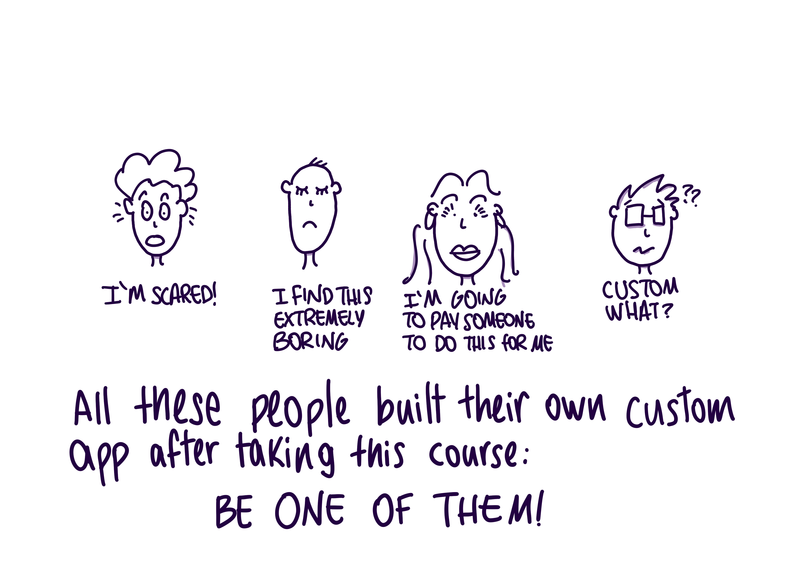
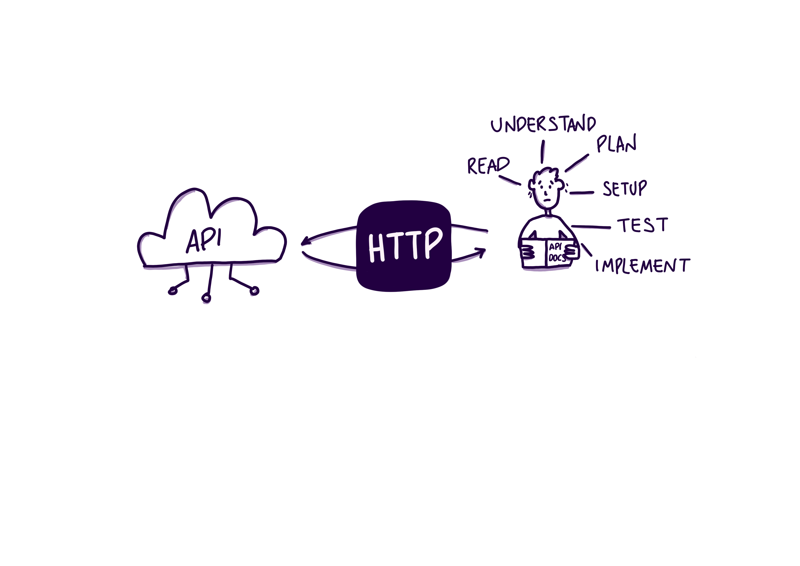
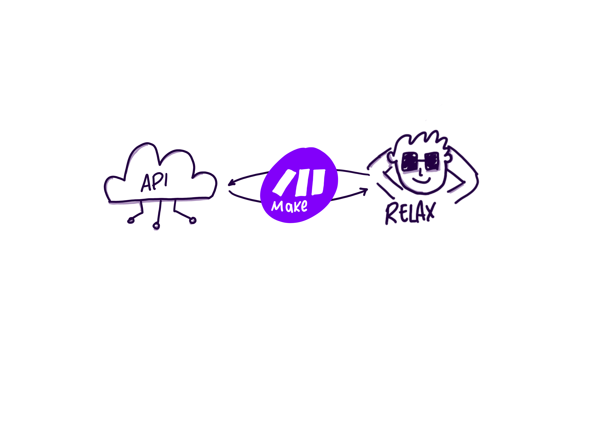
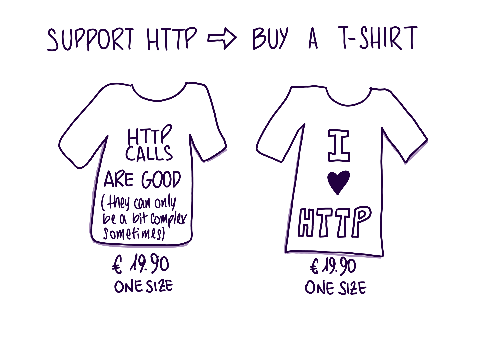
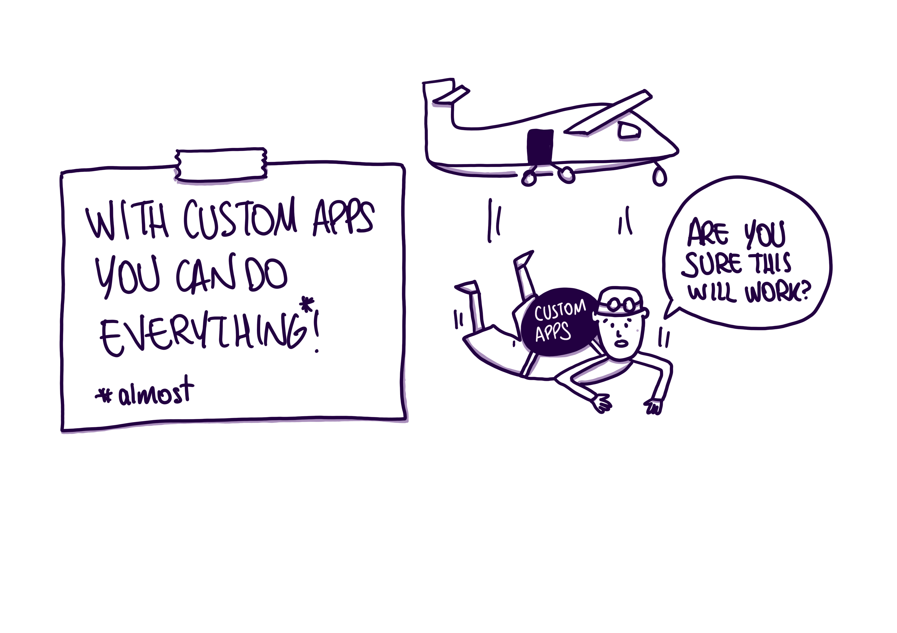
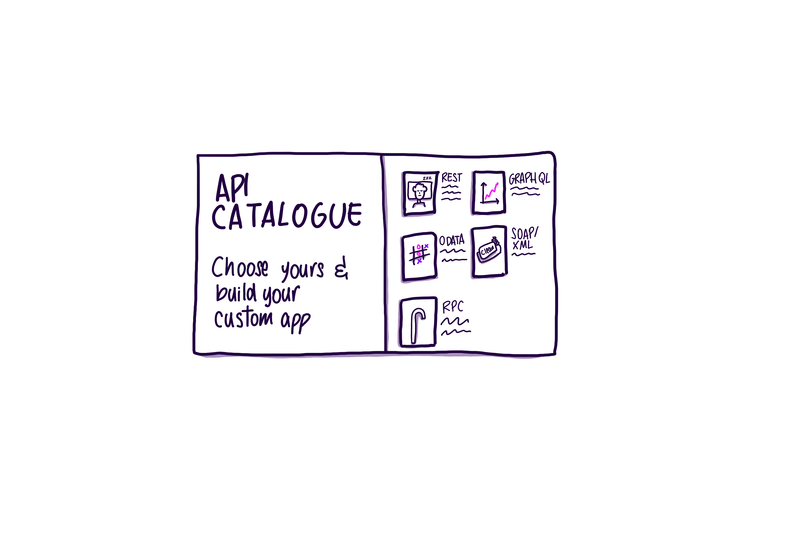
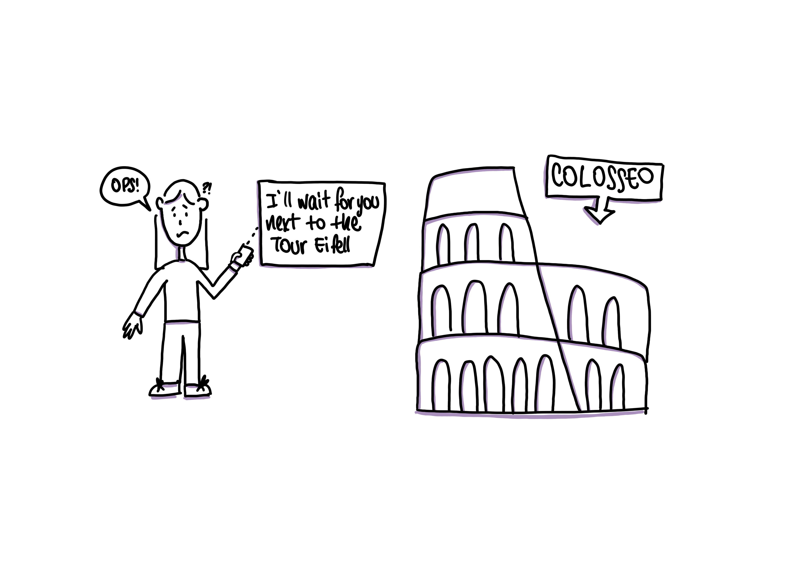
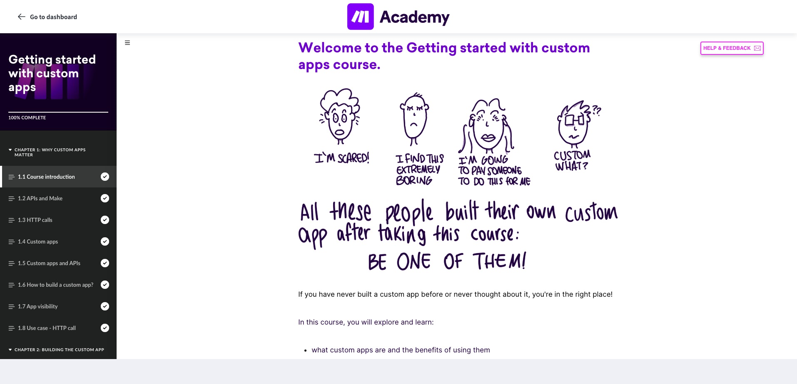
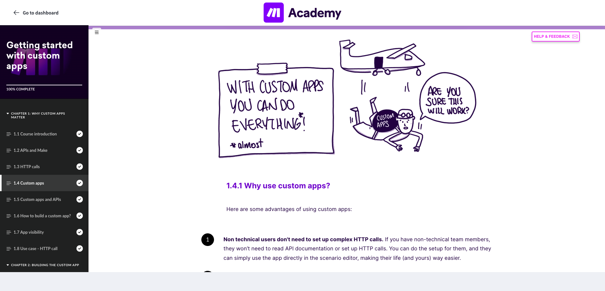

Custom Apps is one of the most technically complex topics in Make Academy, a course aimed at technical users. The topic already had thorough documentation in Make's developer centre.
A technically complex course for developers, made human through hand-drawn illustrations and a tone that deliberately broke from documentation.
Custom Apps is one of the most technically complex topics in Make Academy, a course aimed at technical users. The topic already had thorough documentation in Make's developer centre.
A technical course for a technical audience risks becoming exactly what learners already have: more documentation. The challenge was to create something genuinely useful, that covered the same ground as the developer manual but felt completely different to engage with.
I designed a Rise course that deliberately broke from the tone and format of technical documentation. The decision to use hand-drawn illustrations, all seven drawn by hand in Procreate, was central to that. Where the developer manual was precise and dry, the course was light, funny, and human. The visuals carried that tone throughout, making a dense technical topic feel approachable without dumbing it down.
I owned the full process, from course planning, to working with SMEs to obtain technical information, structuring the course, writing all the content, and creating all seven original illustrations by hand in Procreate.
The course was built in Articulate Rise and structured to complement rather than duplicate the developer manual. The writing matched the visual tone, concise, direct, with moments of humour to keep technically proficient learners engaged rather than bored.
Every illustration was designed to support a specific concept in the course, not just decorate the page. The result was a course that felt like it had been made by a person, not assembled from a template.
All seven created by hand in Procreate, each designed to support a specific concept in the course — not to decorate the page.







Two screens from the course inside Make Academy, showing how the hand-drawn illustrations sit within the Rise layout and set the tone from the first page.


Covered the same technical ground as the developer manual — with a completely different learner experience. 7 original illustrations. A tone developers didn't expect. A course that felt like it had been made by a person.
A technically demanding course that didn't feel like documentation, giving developers a learning experience worth completing rather than a manual worth skimming.